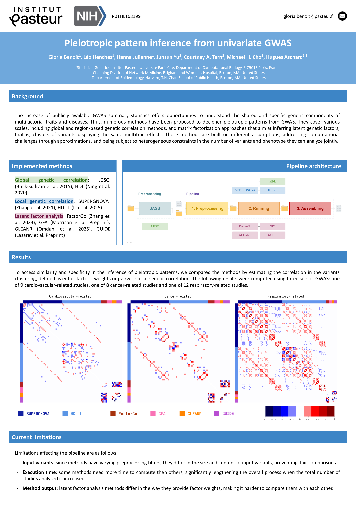
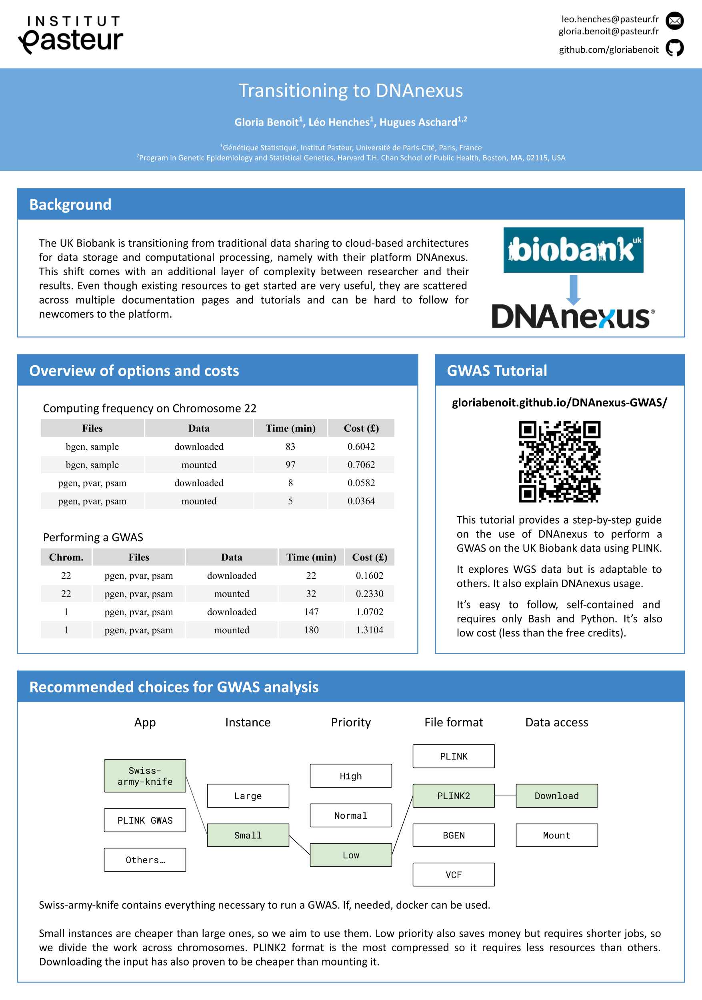
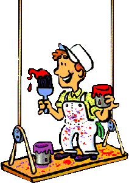

Gloria BENOIT
Hi!
Recently graduated from a Master's degree in BioInformatics at Université Paris Cité, I am now a research engineer at Institut Pasteur in Paris.

Current affiliation
I currently am a research engineer at Institut Pasteur, in Paris, within the Statistical Genetics team led by Hugues Aschard. This follows my 6 month internship in the same team under supervision by Léo Henches, a permanent research engineer.
Latest appearances
I've attended the 54th European Mathematical Genetics Meeting in Davos, Switzerland, in April 2026. I had the opportunity to present my work on pleiotropic pattern inference through a poster presentation.
Poster gallery


Pleiotropic pattern inference from univariate GWAS
EMGM (Apr. 2026)
This second poster was presented at the 54th EMGM in Davos, and is the result of my work done as a research engineer in the Statistical Genetics team of Institut Pasteur.
Transitioning to DNAnexus
EMGM (Apr. 2025), ISHG (May 2025) & INCEPTION Symposium (Nov. 2025)
This poster is the first poster I ever made! It's the result of my 6 month internship project, done at Intistut Pasteur under the supervision of Leo Henches. I presented it along with Leo Henches at the 53th EMGM in Brest, then alone at the ISHG and the INCEPTION Symposium, both in Paris.